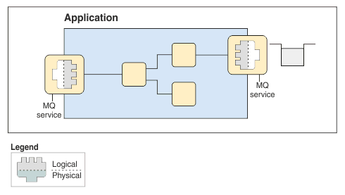

You can use an MQ Service to define the interaction between IBM Integration Bus and WebSphere MQ applications.
This MQ Service editor helps you discover queues that existing Queue Managers define, and then use these queues to define a WSDL file to use with the IBM MQ Service definition specification (Support Pac MA93).

After you create an MQ Service, you can use it to create and configure MQ nodes. You can drag the MQ Service onto the Message Flow editor, or onto an MQInput node or MQOutput node.
Click here for additional information on MQ Services.